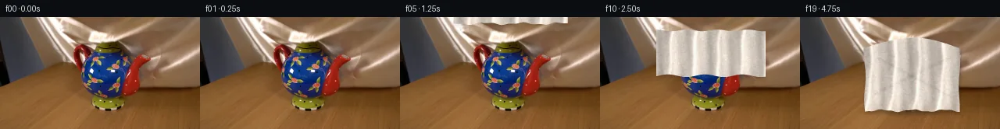

![首帧]()

Round 00
2026-11-05T11:12:22.569028+00:00像素候选变化代码 +208/−0inspection 更新
pixels 913b03b673e8da5d · code 97f7b05024d3d585
查看本轮 generate.py 真实 diff
--- previous/generate.py +++ current/generate.py @@ -0,0 +1,208 @@ +#!/usr/bin/env python3 +"""Generate the locked-off teapot-and-silk PixelWorld continuation.""" + +from pathlib import Path + +import numpy as np +from PIL import Image, ImageDraw, ImageFilter + +import artifact_io + + +ROOT = Path(__file__).resolve().parent +W, H = 256, 144 + + +def smoothstep(x): + x = np.clip(x, 0.0, 1.0) + return x * x * (3.0 - 2.0 * x) + + +def blur_array(a, radius): + """PIL Gaussian blur for a local scalar field, returned in [0,1].""" + u8 = np.uint8(np.clip(a, 0.0, 1.0) * 255.0 + 0.5) + return np.asarray(Image.fromarray(u8).filter(ImageFilter.GaussianBlur(radius)), dtype=np.float32) / 255.0 + + +def cloth_geometry(t, sx, sy): + """Return an antialias sample mask and local cloth coordinates.""" + # Frame 1 is anticipation; progress ends exactly at one on frame 19. + p = smoothstep((t - 1.0) / 18.0) + phase = 0.58 * t + + if p < 0.47: + q = smoothstep(p / 0.47) + left = 68.0 + 4.0 * q + right = 216.0 - 4.0 * q + top_flat = -64.0 + 81.0 * q + top = top_flat + 0.45 * np.sin(sx * 0.071 + phase * 0.20) + bottom = ( + top_flat + + 58.0 + + (1.0 + 1.2 * q) * np.sin(sx * 0.132 + phase) + + 0.65 * np.sin(sx * 0.319 - phase * 0.7) + ) + # Slightly breathing free edges keep the fabric organic. + left_y = left + 0.7 * np.sin(sy * 0.085 + phase) + right_y = right + 0.6 * np.sin(sy * 0.074 - phase * 0.8) + else: + r = smoothstep((p - 0.47) / 0.53) + left = 72.0 + 11.0 * r + right = 212.0 - 8.0 * r + mound = ( + 27.0 + + 0.00355 * (sx - 144.0) ** 2 + + 0.55 * np.sin((sx - 96.0) * 0.082) + ) + # A tiny ripple dies away during the last two frames. + settle = (1.0 - r) * 1.1 * np.sin(sx * 0.16 + phase) + top = (1.0 - r) * 17.0 + r * mound + settle + hem = ( + 120.4 + + 1.35 * np.sin((sx - 74.0) * 0.155) + + 0.48 * np.sin(sx * 0.41 + 0.6) + ) + bottom = (1.0 - r) * ( + 75.0 + 1.7 * np.sin(sx * 0.132 + phase) + ) + r * hem + left_y = left + r * (1.15 * np.sin(sy * 0.10 + 0.3) + 0.012 * (sy - 86.0)) + right_y = right + r * (0.85 * np.sin(sy * 0.105 + 1.8) - 0.010 * (sy - 84.0)) + + inside = (sx >= left_y) & (sx <= right_y) & (sy >= top) & (sy <= bottom) + return inside, p, top, bottom, left, right + + +def render_cloth(base, t, noise): + """Composite one physically suggestive ivory silk state.""" + if t == 0: + return base.copy(), np.zeros((H, W), dtype=np.float32) + + # Four-by-four subpixel coverage gives soft but precise moving edges. + yy, xx = np.mgrid[0:H, 0:W].astype(np.float32) + coverage = np.zeros((H, W), dtype=np.float32) + for oy in (0.125, 0.375, 0.625, 0.875): + for ox in (0.125, 0.375, 0.625, 0.875): + m, _, _, _, _, _ = cloth_geometry(t, xx + ox, yy + oy) + coverage += m.astype(np.float32) / 16.0 + … diff truncated; 121 more lines …